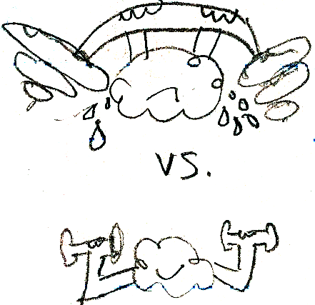

Needs, Entertainment, Decision-making, Overload and other Concepts relevant to information behavior
How do users decide, browse, avoid and assign relevance or entertainment value on the web? What role do needs play in information seeking? Read these summaries and reflections from chapters 4 and 5 of Donald Case's book, "Looking for information" for ideas on how these concepts are relevant to the web development, IA and UX fields.
Chapter 4: Needs & Information Seeking
Be aware of the different Needs that motivate people to seek information:
- reduce their uncertainty,
- address an emotion (like anxiety),
- bridge a gap in knowledge,
- make meaning/sense of something, or
- discover patterns or fill in gaps in patterns previously recognized.
How is the need for information related to more "primary" needs, such as shelter, food, and love? Is it primary, as well?
Chapter 5: Decisions, Browsing, Relevance, Avoidance & Entertainment
We have limits to both our brain's attention and ability to process information. Decision-making is the search for and choice among alternatives. But, because of our limits, we don't want too many choices or we become overwhelmed and choose based on only ONE, prioritized attribute.
Feedback within web interactions can alter our mindless behavior/decisions, such as the ability to narrow searches progressively with facets or Google's "Did you mean...?"
Browsing is a more informal or unplanned type of search behavior, somewhat like foraging for food. Motivations for this (curiosity, interest, usefulness, play, entertainment, etc.) vary. Information foraging theory can be a helpful mental model when designing news sites, for instance, to have connected areas of interesting "food" for thought and when designing advertising headlines for articles.
Relevance (a relationship of value) is how you recognize an interesting item when browsing. Salience is something that stands out (see gestalt psychology for useful distinctions), although it may not be relevant (like a blinking ad).
Sometimes we avoid information that contradicts our point of view (cognitive dissonance) or because there's too much of it. While we cannot do much about the dissonance, IAs can and should provide filters to address the that overload. At a basic level, this is what a heirarchical sitemap does.
Information can cause emotions.
For instance, without coping strategies, information can CAUSE anxiety (not just reduce it). There are a number of overload coping strategies:
- Omission
- Error
- Queueing
- Filtering
- Approximation
- Multiple channels
- Escaping
However, even though we need to filters, we don't want to filter out all the interesting stuff. We also want stimulation (curiosity, novelty). There's a fine line between fun comprehensibility and boring sameness.
Some groups of people get less information than others, called information poverty or a knowledge gap. It's important for IAs to consciously attend to different groups, and decrease barriers to learning, when designing for users.
People prefer other human beings as sources of information, so crowdsourcing and social ranking will likely become more important. As an example, think of Amazon's reviews.
Facts are most easily understood when presented in an entertaining manner. Perhaps this is why the Daily Show is so popular?
Bibliography
Case, D. (2008). Looking for information: a survey of research on information seeking, needs, and behaviors, 2nd Edition. Emerald Group Publishing Limited. ISBN: 978-0123694300.